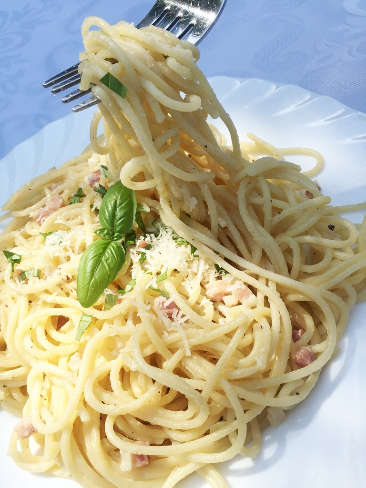

Home
Sausage Pasta

Description
This is a recipe that my mum requests I make a lot. I have no idea if there's an actual Italian pasta dish that this is based on; it's something I've cooked for many years now.
You can use whatever pasta for this dish. I usually use linguine or penne since we always have it in the house. I assume you could use other types of sausage as well although obviously you would then have to adjust the seasoning to complement the filling.
Serves 2 generously.
Ingredients
- 3 or 4 of the best quality pork sausages you can afford
- 1 onion, red or brown, diced
- at least 2 cloves garlic, minced
- 1tbsp tomato puree
- 400g chopped tomatoes (1 can)
- 200g dry pasta
- 1tsp fennel seeds
- 1tsp mixed herbs or at least oregano
- 1tbsp olive oil
- salt and black pepper to taste
- (optional) ~100ml red wine
- (optional) grated Parmesan (or equiv) for topping
Steps
- Heat oil on medium-high until shimmering and add onion. Saute until translucent.
- Remove sausage filling from casings and add to pan. Fry until cooked through.
- Add garlic, seasonings, and tomato puree and stir through.
- Add chopped tomatos and stir. If using red wine, I like to quarter-fill the empty tomato can and swish around before adding to the pan. Stir through and let bubble, then turn heat to low. Simmer sauce for as long as you can stand to.
- Cook pasta according to package instructions. For the love of God, salt your pasta water. I promise it does actually make a difference!
- Reserve some pasta water and drain. Add cooked pasta to sauce and stir through. Add pasta water a little at a time to help the sauce coat the pasta.
- Serve with black pepper and Parmesan on top. Enjoy!